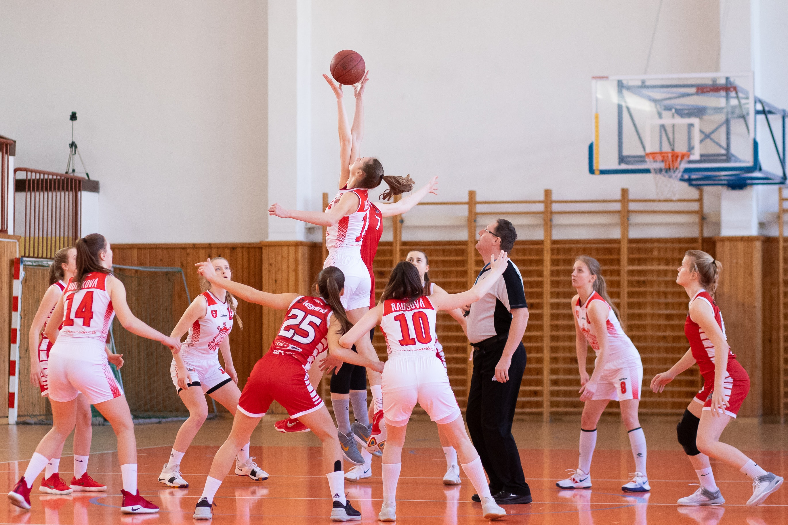

Es la capacidad de determinar la posición y los movimientos del cuerpo en el espacio y el tiempo en relación a un campo de acción definido y/o a un objeto en movimiento. Es fundamental para los deportes colectivos ya que permite a los jugadores situarse adecuadamente en el espacio y tiempo durante el juego.
Un ejemplo concreto de la importancia en los deportes colectivos es el basquetbol. En este deporte los jugadores deben tener una buena orientación espacial para moverse eficientemente por la cancha, estabilizar en las áreas adecuadas y posicionarse estratégicamente para recibir pases o defender. Además, la orientación temporal es esencial para sincronizar los movimientos con los compañeros de equipo, anticipar jugadas y realizar acciones en el momento oportuno, como lanzar un pase preciso o bloquear un tiro al aro. La combinación de una sólida orientación espacial y temporal permite a los jugadores actuar de manera coordinada y eficaz maximizando las posibilidades de éxito del equipo.
La orientación espacial y temporal en los deportes colectivos es fundamental para una ejecución precisa, una toma de decisiones rápida y una mejor comprensión del juego lo que lleva a un rendimiento individual y colectivo mejorado.
